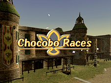
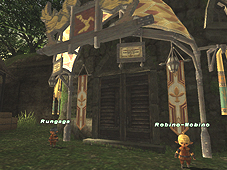
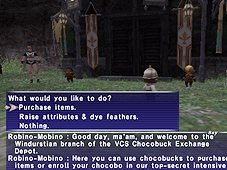
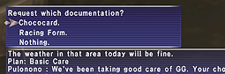
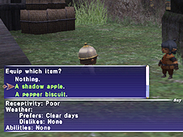
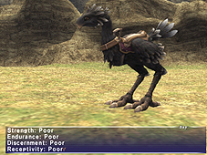

The newly completed CRA (Chocobo Racing Association) racetrack is the perfect place for players to test out and show off the skills of their very own chocobos. The automated races held at this exciting venue will require players to piece together a picture-perfect plan based on variables such as chocobo condition and the weather, using options consisting of orders given to their jockeys and items to be utilized on the track. But that’s not all. Performing well in these races will earn players gil or VCS-mint chocobucks, which can be used to purchase items or services that will assist in breeding.
Only players who have installed and registered the Aht Urhgan expansion data will be able to access the chocobo race content.
For more information on chocobo breeding.
Related Information>>
The following is a list of steps required before participating in a race:
1. First, players must be raising an adult chocobo and have obtained a CRA racing form (available from a trainer) or have a chocobo out to pasture and possess its VCS registration card. Next, players must visit one of the CRA branches located in San d’Oria, Bastok, and Windurst, and register their chocobo to race.
– Regional CRA Branches

**San d’Oria**
Southern San d’Oria – Alangriche
Northern San d’Oria – Monteverle
Port San d’Oria – Ramiene
**Bastok**
Bastok Mines – Jazgeh
Bastok Markets – Galienne
Port Bastok – Salvador
**Windurst**
Windurst Waters - Turumi-Byrumi
Port Windurst - Lhimo Keanyohn
Windurst Woods - Rungaga
What are Chocobucks?
Chocobucks are a special type of currency for use at CRA-sanctioned establishments. Chocobucks can be earned by winning special races and can be exchanged for items and services used in chocobo breeding. Chocobucks are also required to participate in certain official races.
*The maximum amount of chocobucks a player can obtain is 1000.
*Chocobucks can only be used at the branch at which they were earned.
– Chocobuck Exchange Centers

Southern San d’Oria – Palabelle
Bastok Mines – Gavoroi
Windurst Woods - Robino-Mobino
What are Racing Teams?
Each of the three regional CRA branches has its own racing team. Before participating in any races, players must first join one of the three teams (San d’Oria, Bastok, or Windurst). While similar in many ways, each racing team also offers many unique services--from different items available at the Chocobuck Exchange Centers, to special races. Though players are required to select a racing team, they can change their affiliation (free of charge and without penalties) at any time.
– Changing Affiliation
In the event that players wish to change their affiliation, all records of their previous race results and chocobuck earnings will be stored at the CRA branch. While players cannot transfer those results and earnings to their new racing team, if they choose to return to a previous team, they will be able to start where they left off.
2. Register Your Chocobo
Chocobos can be registered at any of the aforementioned CRA branches by trading to the representative either of the two documents (obtainable from a chocobo trainer):

– VCS Registration Card
– CRA Racing Form (free)
*Only adult chocobos can participate in races.
*Players may only register one chocobo at a time.
*If a chocobo’s attributes change after CRA registration, players must re-register their chocobo for those changes to be reflected.
3. Select a Race
Currently, players can choose from the following three types of races:
| Race Type | Fee | Prizes | Description |
| Free Runs | Gil | Chocobucks | “Practice” races that may be run at any time. |
| Official Races | Chocobucks | Gil & Prizes | Mission-style races sponsored by the VCS. |
| Re-runs | Chocobucks | Gil | Previously cleared official races. |
Free Run
Placing in free runs is currently the only way for players to earn the chocobucks necessary for participating in official races and purchasing items at the Chocobuck Exchange Centers. There are no limits to the number of races players may participate in each (Earth) day, but the fee will increase with each race.
Official Race
By successfully completing the objectives of these “mission-style” races, more challenging races will be unlocked. Chocobucks are usually required to participate in official races; however, the first race (Novice Race I) is available free of charge.
*Due to the strain some of the more advanced official races place on a chocobo, players will be required to allow their chocobos a period of rest before entering another race.
Re-run
For a small chocobuck fee, players can re-race previously completed official races. While prizes will be rewarded to those players who place, the amount will be considerably less than that which was received the first time.
*Please note that the required rest period mentioned above also applies to re-runs.
4. Make Preparations
Before running a race, players will have the opportunity to make the following preparations:
- Visit the paddock
Players can visit the paddock and view the condition of all the chocobos scheduled to participate in the upcoming race.
- Give orders to the jockey
Players can give their jockeys one of the following three orders:
Keep Pace
Have the jockey maintain a consistent pace throughout the whole race.
Final Spurt
Have the jockey save the chocobo's energy until the end of the race.
Sprint
Have the jockey push the chocobo to its limits from the get-go.

Equip items
Players can equip their chocobo/jockey with items that improve attributes or wreak havoc on other racers. Before players can equip items, they must first trade them to the CRA representative. The representatives will hold on to one of each item.
*Players can only equip one item per race.
5. Start the Race
Once all preparations have been made, the race will begin. All races are automatic, so players only need to sit back and watch the action unfold on the racetrack.
Weather
Just as in the field, weather on the racetrack can affect a chocobo’s performance.
Placing
To make races fair for chocobos of all sizes, placing will be determined not by when a chocobo’s beak crosses the finish line, but when its saddle does.
Items & Equipment
All items equipped to a chocobo or jockey, regardless of their type, are consumable and can only be used once (though the effect of chocobo equipment will be present throughout the race).
The following are a few tips for racing novices:
Attributes
A chocobo’s attributes directly affect its performance in a race. While each attribute is important, players will find that a high “strength” rating will give most chocobos an advantage on the track. However, we would like to stress that balance is also necessary.

*Strength: Affects a chocobo’s speed
*Endurance: Affects a chocobo’s stamina
*Discernment: Affects a chocobo’s pace setting, and item use timing
*Receptivity: Affects a chocobo’s ability to avoid accidents
*Weather: Affects a chocobo’s performance in certain types of weather
*Abilities: Some abilities affect the other attributes
Jockey Orders & Equipment
Selecting the appropriate item to equip during a race can be the difference between coming in first and coming in last. It is important to select an item that will complement a chocobo’s abilities and attributes, as well as the jockey’s orders and opponent condition. For example, jockeys who have been given the order to sprint, will often use items at the beginning of a race. In cases like this, equipping the jockey with a stamina apple will help his chocobo to maintain a quick pace for a longer period of time.
| Item | Effect |
| Speed Apple | Used during a race to temporarily boost the speed of a chocobo. |
| Stamina Apple | Used during a race to temporarily regenerate a chocobo's stamina. |
| Shadow Apple | Used during a race to temporarily resist the effects of any detrimental items aimed at the chocobo. |
| Pepper Biscuit | Used during a race to greatly reduce the speed of an opponent chocobo. |
| Fire Biscuit | Used during a race to greatly reduce the stamina of an opponent chocobo. |
| Gysahl Bomb | Used during a race to temporarily reduce the speed of all surrounding opponent chocobos. |
| Spore Bomb | Used during a race to reduce the discernment of all surrounding opponent chocobos. |
| Fairweather Fetish | Used during a race to temporarily clear up the weather. |
| Foulweather Fetish | Used during a race to temporarily call upon a rainstorm. |
| Chocobo Taping | When equipped during a race, this item will slightly increase the strength of a chocobo. |
| Chocobo Blinker | When equipped during a race, this item will slightly increase the stamina of a chocobo. |
| Shadow Roll | When equipped during a race, this item will slightly increase the discernment of a chocobo. |
| Chocobo Hood | When equipped during a race, this item will slightly increase the receptivity of a chocobo. |